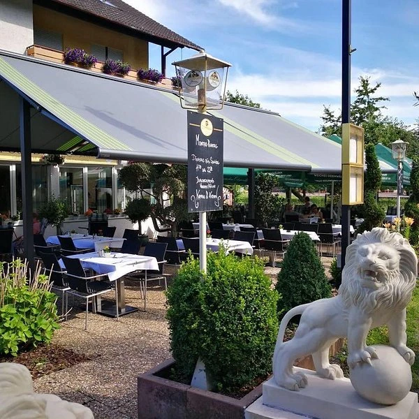

📣
AKTUELLNeuigkeiten aus Bad König
Wichtige Informationen, Entscheidungen und aktuelle Meldungen aus unserer Stadt.
Mehr erfahren →
BDKNG Merch, Shirts, Hoodies, Tassen und weitere regionale Produkte. Der Shop ist der zentrale kommerzielle Bereich von BDKNG.
Der Printify-Shop wird hier direkt verlinkt.
Zum Shop → Printify-Link folgtWas gerade wichtig, interessant oder einfach gut zu wissen ist.
Wichtige Informationen, Entscheidungen und aktuelle Meldungen aus unserer Stadt.
Mehr erfahren → VERKEHR
VERKEHRVeranstaltungen, Feste, Vereinstermine und Highlights auf einen Blick.
Events ansehen →
GENUSSGastronomie, regionale Angebote und später ausgewählte BDKNG-Partner.
Genuss entdecken →BDKNG bündelt Informationen und Angebote aus Bad König im Odenwaldkreis: lokale Nachrichten, Verkehr und Sperrungen, Veranstaltungen, Vereine und Sport, Gastronomie, Gewerbe sowie regionale Produkte im BDKNG Shop. Inhalte werden kompakt aufbereitet und bei Meldungen nach Möglichkeit mit Quellen versehen.
Der Nachrichtenkanal läuft zunächst bewusst im kleinen Testkreis. Danach sollen Meldungen und Termine schrittweise automatisiert werden.